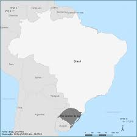
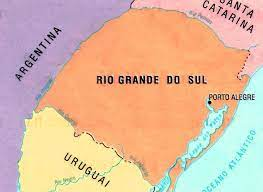

Nesta página você verá um pouco sobre a geografia do Rio Grande do Sul, um estado cuja beleza natural encanta todos os 4 cantos do mundo!!!
Geografia
Localização do RS no Brasil e no Mundo
- Localiza-se no extremo meridional (sul) do país;
- Localiza-se na região Sul do Brasil, junto com Paraná e Santa Catarina;
- Localiza-se no hemisfério sul e no ocidente quando pensamos no mundo todo.
Limites
- Norte e Nordeste: Santa Catarina
- Leste: Oceano Atlântico
- Sul e Sudoeste: Uruguai
- Oeste e Noroeste: Argentina
Clima
- Subtropical úmido ou temperado
- RS possui as 4 estações bem definidas, com invernos moderadamente frios e verões quentes
- Fenômeno do veranico – temperaturas elevadas para a estação, ocorre no outono e inverno
- Vento minuano: característico do RS, é de origem polar, frio e seco. Caracterizado como cortante, de orientação sul/sudoeste e aparece, geralmente, após a passagem de frentes frias
Vegetação
- Campos:
- Vegetação é baixa e rasteira.
- Florestas:
- Dividem-se em Floresta/Mata Subtropical e Floresta de Araucárias/Mata dos pinhais. A erva mate é encontrada especialmente na área de florestas.
- Mata Subtropical:
- É a floresta predominante do RS. Encontra-se árvores como ipê, louro e cedro.
- Mata dos Pinhais:
- Localiza-se no planalto rio-grandense. A araucária predomina nas áreas mais altas.
- Vegetação Litorânea:
- Apresenta um solo arenoso, a vegetação é rasteira – mangues e restingas.
- Mata de Galeria:
- Próxima aos cursos dos rios com características das matas subtropicais e de pinhais.
- Capões de mato:
- São aglomerados de árvores em uma determinada região. Em locais úmidos e de difícil acesso por ter solos embarrados ou alagados.
Hidrografia
O Sistema Hidrográfico do RS é dividido em 3 bacias hidrográficas: a Bacia Hidrográfica do Uruguai, Bacia Hidrográfica do Guaíba e Bacia Hidrográfica Litorânea.
A Bacia Hidrográfica do Uruguai: Seu principal rio é o Uruguai, o qual é formado pelos rios Pelotas e Canoas, além disso compreende os afluentes da margem esquerda do Rio Uruguai: Quaraí, Ibicuí, Piratinim, Ijuí, Turvo, Várzea e Passo Fundo.
As Bacias Hidrográficas do Guaíba e Litorânea correspondem a toda metade oriental do Estado, são drenadas por rios cujas águas, antes de atingir o Atlântico, vão ter a uma das lagoas litorâneas. Seu principal rio é o Rio Jacuí.
As lagoas mais importantes do nosso Estado são: Laguna dos Patos, Lagoa Mirim e Lagoa Mangueira.
Capital do RS: Porto Alegre
Fundação: 26/03/1772;
| Nomes | ||
|---|---|---|
| 1º | Porto de Dorneles | Antes de 1752 |
| 2º | Porto dos Casais | 1752 |
| 3º | São Francisco do Porto dos Casais | 26/03/1772 |
| 4º | Freguesia de Nossa Senhora Madre de Deus de Porto Alegre | 1773 (se tornou capital) |
| 5º | Porto Alegre | 1809 |
| Capital Política | ||
|---|---|---|
| Poder | Sede | Membros |
| Poder Legislativo | Palácio Farroupilha | Deputados Estaduais |
| Poder Executivo | Palácio Piratini | Governador |
| Poder Judiciário | Palácio da Justiça | Juízes |
Economia
A economia do nosso Estado é equilibrada, tendo como base a agricultura, a pecuária e a indústria. Os produtos agrícolas de destaque são a soja, o trigo, o milho e o arroz. No setor pecuário, o maior destaque é a criação bovina, embora os rebanhos de suínos, ovinos e equinos sejam grandes. Os municípios que se destacam na atividade pecuária são: São Gabriel, Dom Pedrito, Santana do Livramento e Alegrete.
A indústria gaúcha é diversificada. O polo petroquímico está estabelecido na cidade de Triunfo e é considerado o mais moderno e competitivo da América Latina. E o segundo polo de autopeças mais importante do país é da região de Caxias do Sul. Por fim, além das condições favoráveis em infraestrutura e geografia, o Estado é conhecido por seu padrão cultural mais alto que a média nacional.